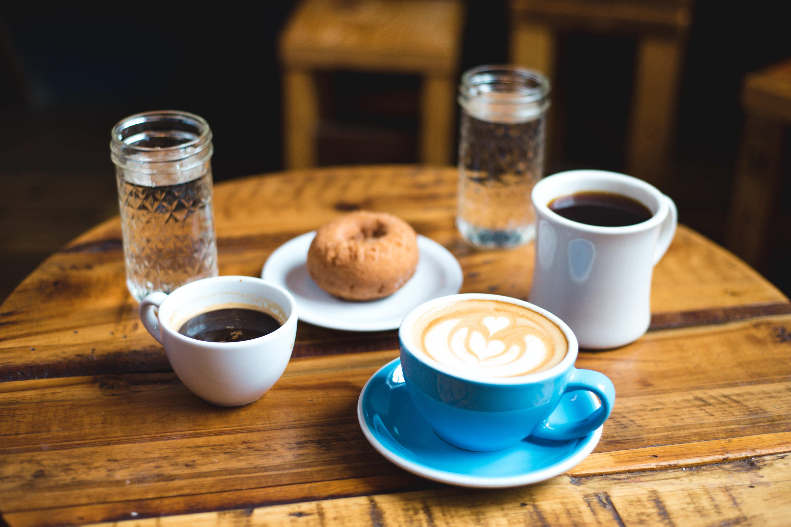

5. 프랜차이즈 커피숍 매니저

| 기간 |
5년 |
| 상세업무 |
매장청소, 머신청소, 부재료채우기, 자재 발주, 인원관리, 인원스케줄,
매장관리, 진상 손님 응대, 빠르고 정확한 커피제조
|
일한 후기
결혼하고 나니 기혼 여성은 구직하기 정말 개빡세다는 생각이 듦. 혹시나
결혼할 계획이 있으신 분들은 이직하고 결혼하시던가 그렇지 못하면
혼인신고를 취직하고 나서 하시길.. 나는 아무것도 몰라서 혼인신고 무턱대고
하고 직장구하려니까 개싫어한다.ㅋㅋㅋㅋ (출산계획 있냐 그런거도 물어보고
그럼 곤란하다는 소리까지 들었음) 암튼 그런 나를 아무 조건없이 받아준
대형 프랜차이즈 커피숍! 나름 커피숍 알바에 대한 로망도 있어서 냉큼
들어갔다. 확실히 모든 업무가 매뉴얼화가 되어 있어서 체계적이고 모든
매장에서 동일한 서비스를 제공할 수 있다. 닉네임으로 서로를 불러서 그런가
수평적이고 매장 분위기도 좋아서 진짜 재밌게 일했다. 오프날에도 만나서
놀러가기도 하고.. 동료 이상의 언니 동생들을 만들 수 있었음. 그래서
육아휴직 포함 5년 동안 일했던 건데 지금 내가 봐도 놀랍네..ㅋㅋ 5년동안
별별일 다 있었는데 진짜 좋았던 기억밖에 없다.
얻은거 & 배운거
시스템화, 매뉴얼화가 중요하다는 것을 배움. 그리고 육아휴직을 그렇게 잘
주는 회사도 없을 듯. 덕분에 출산하기 전, 하고 나서, 그리고 1년 더
무급/유급으로 잘 쉬고 복직할 수 있었다. 고객 친절하게 응대하는 스킬도
얻음. 웬만한 클레임 거는 고객들은 잘 들어주고 공감만 해줘도 1차 진화에
성공할 수 있다는 사실도 깨달음. 고객들을 위한 마케팅(샘플링, 커피세미나)도
잘 되어 있어 일방적 소통이 아닌 쌍방 소통을 만드는 노력도 확인함.